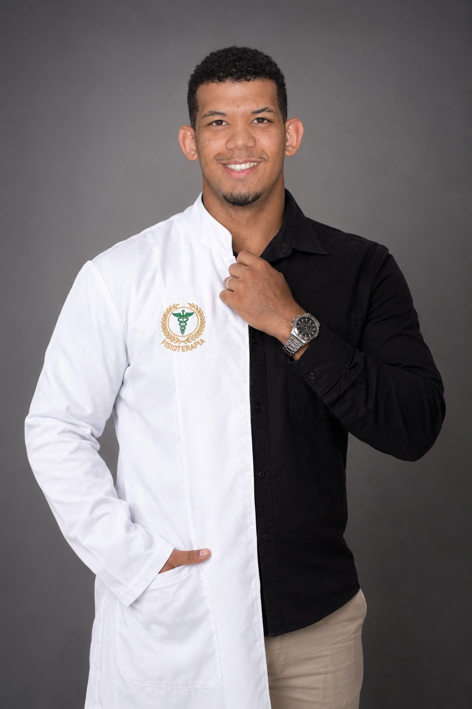
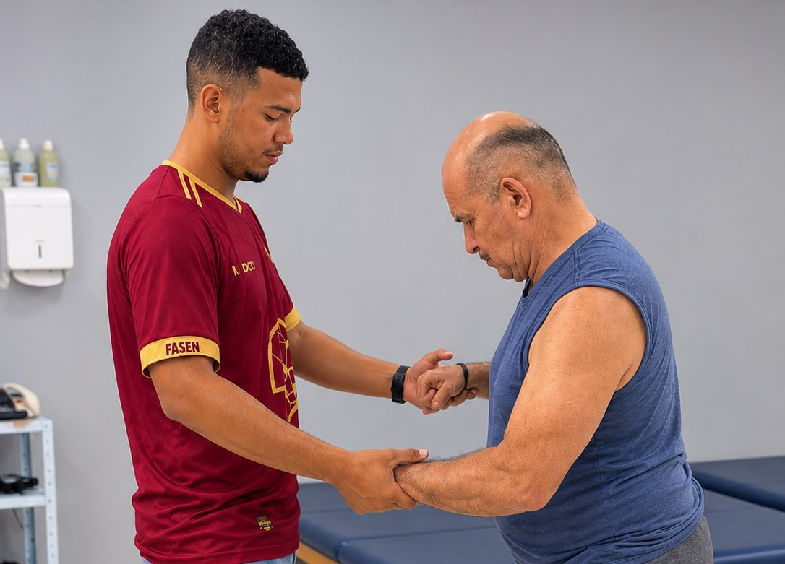
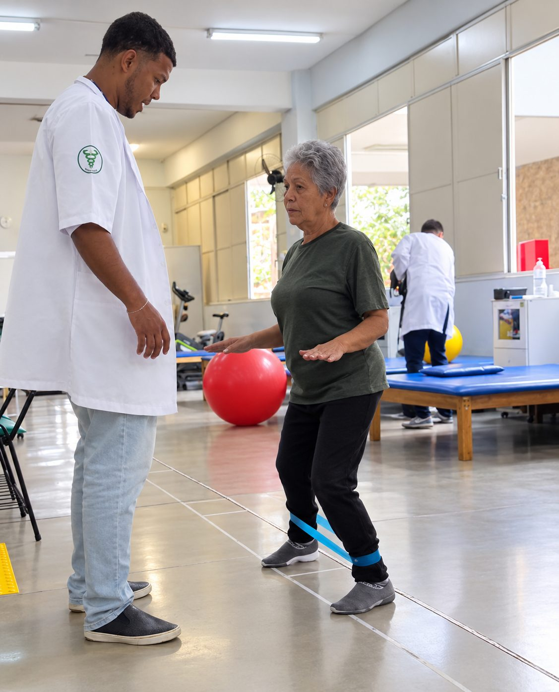
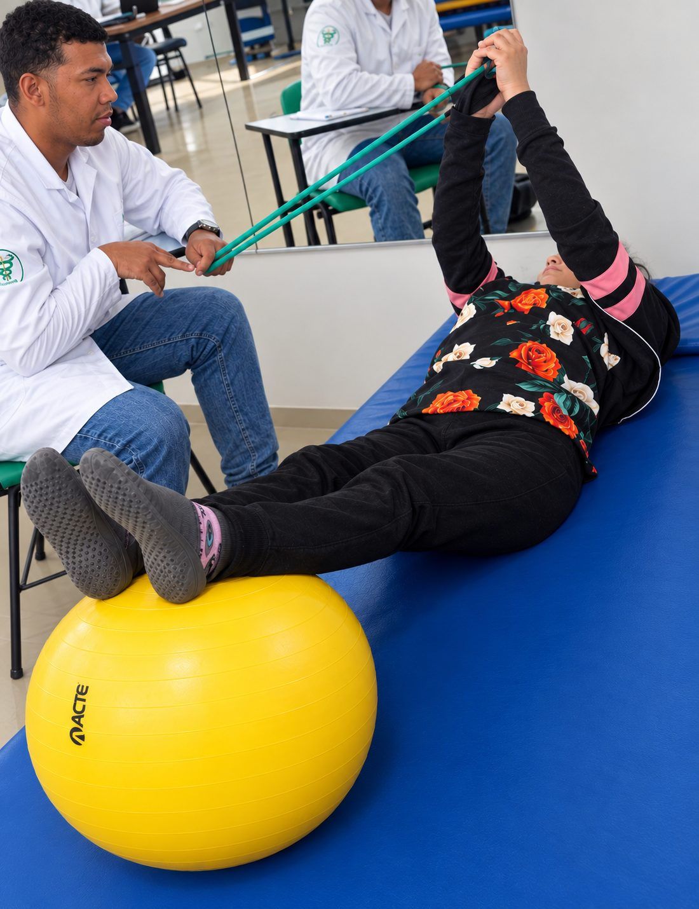

Recupere seu movimento e viva sem dor com a Fisioterapia!
Um acompanhamento individualizado para aliviar dores, fortalecer o corpo, melhorar o equilíbrio e devolver autonomia ao seu dia a dia, do primeiro atendimento até a alta.
Conversar com o Gabriel
Fisioterapeuta que acompanha cada paciente de perto, do primeiro atendimento até a alta. Atende em clínicas, sempre com atendimento individual e um plano de exercícios adaptado à fase de cada pessoa.
Começar meu atendimento
Corrige o movimento na hora
Ao seu lado em cada repetição
Plano ajustado à sua evoluçãoTudo começa em entender onde dói e o que você precisa voltar a fazer. Individual desde o primeiro minuto.
Exercícios com faixas elásticas e as mãos do Gabriel guiando cada repetição ajudam a fortalecer a musculatura, melhorar o equilíbrio e devolver segurança nos movimentos do dia a dia.
Bolas terapêuticas, faixas e macas permitem montar planos adaptados ao objetivo e à fase de cada paciente, de crianças a adultos.
Começar meu atendimentoÉ só uma conversa pelo WhatsApp.Escala ilustrativa. Cada caso é avaliado individualmente.
Nossos atendimentos são ideais para:
A duração varia de acordo com o tipo de tratamento e com as necessidades de cada paciente. O tempo e a frequência são definidos na avaliação inicial e podem ser ajustados ao longo do acompanhamento.
Não é obrigatório para ser atendido: o paciente pode procurar o fisioterapeuta diretamente para uma avaliação. Em atendimentos por plano de saúde, porém, o convênio pode exigir o pedido médico.
Depende do diagnóstico, do seu objetivo e de como o seu corpo responde ao tratamento. Por isso, não existe um número fixo: após a avaliação, o plano é montado e reavaliado periodicamente.
Sim. A fisioterapia pode atender pessoas de diferentes idades, e os exercícios e recursos são adaptados à idade, ao objetivo e às condições de cada paciente.
Isso depende do plano e das condições de atendimento de cada profissional. Para saber sobre convênios, valores e formas de pagamento, envie uma mensagem pelo WhatsApp e responderemos.
Não se preocupe! Nos envie agora uma mensagem no WhatsApp, iremos responder prontamente o mais rápido possível e tirar suas dúvidas sobre o atendimento!
Chamar no WhatsApp